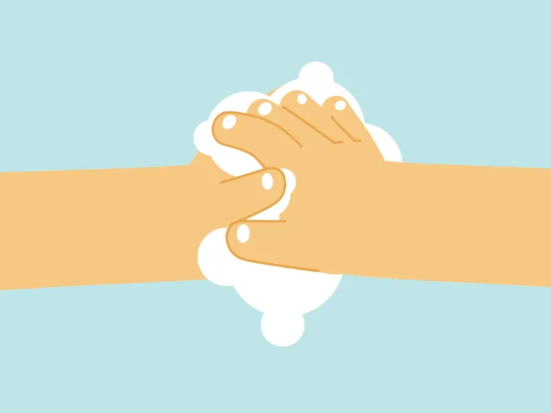

flashcard
lavagem das mãos
beta
higienização
modo::flashcard
todos os cenários
revisar erros
fechar
card
1/12
✓
0
✗
0
modo: revisar erros
cenário
escolha o método correto de higienização
🧴
Álcool 70%
🚿
Água e Sabão
próximo →

0 / 7
1
✓
2
✓
3
✓
4
✓
5
✓
6
✓
7
✓
toque no passo para avançar
🙌
concluído
lavagem das mãos
—
acertos · em breve
repetir
sessão
higienização das mãos
0
corretos
0
aceitáveis
0
erros
recomeçar
revisar erros